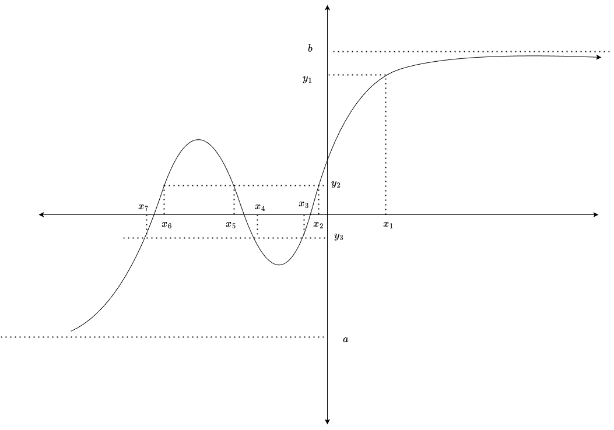

Tasks
Sub Experiment - 1
Sub Experiment - 2
Sub Experiment - 3
Calculate the CDF of a Function of a Random Variable
Instructions
A graph of \(Y = g(X)\) is shown, and a random point \(y_i\) is chosen on the y-axis.
Your goal is to construct the formula for the CDF of Y at that point, \(F_Y(y_i) = P(Y \le y_i)\).
First, find the set of all x-values for which \(g(X) \le y_i\).
Then, express the probability of this set using the CDF of X, \(F_X(x)\).
Click on
or
drag
the required components from the "Available Tiles" panel into the "Your Answer" panel to build the formula.
Click
Submit
and check the
Observations
panel for detailed feedback.
For the given graph \(Y = g(X)\), find the formula for the CDF of \(Y\) at the point
y_?
.

Available Tiles
Your Answer Formula for \(F_Y(y_i)\)
Submit
Reset
Observations
Start by building the formula for the given point.